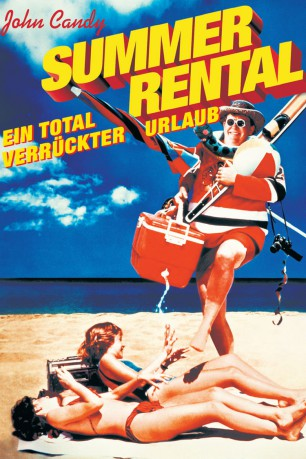

#11138 Ein Total verrückter Sommer
Alternativ: Summer Rental (Englischer Titel)
 
 IMDB-Wertung: 6.3 / 10
IMDB-Wertung: 6.3 / 10  Metascore: 38
Metascore: 38 
14 Jahre Dauerstress – nun braucht der Fluglotse Jack Chester dringend Urlaub! Zusammen mit seiner Frau Sandy, seinen drei Kindern und dem Hund Archie startet er zu den sonnigen Stränden Floridas. Doch statt der ersehnten Entspannung warten auf die Chesters einige Missgeschicke: Sie beziehen ein falsches Haus und werden dort von dem arroganten Millionär und Segel-As Al Pellet geplagt, bis Jack schließlich genug hat: Er beschließt, Pellet beim Segelcup herauszufordern.
Jahr: 1985
Dauer: 83 Minuten
FSK: 12
Land: USA Studio: Paramount PicturesTonspuren:
Untertitel:
Auflösung: 1080p (1920x1080) Größe: 5601 MB
Genre: Komödie
Regisseur:  Carl Reiner
Carl Reiner
Drehbuch: Jeremy Stevens, Mark Reisman
Soundtrack: Alan Silvestri
Darsteller:
 John Candy als Jack Chester
John Candy als Jack Chester- Karen Austin als Sandy Chester
- Kerri Green als Jennifer Chester
- Joey Lawrence als Bobby Chester
 Richard Crenna als Al Pellet
Richard Crenna als Al Pellet Rip Torn als Scully
Rip Torn als Scully John Larroquette als Don Moore
John Larroquette als Don Moore Richard Herd als Angus MacLachlan
Richard Herd als Angus MacLachlan Lois Hamilton als Vicki
Lois Hamilton als Vicki Carmine Caridi als Ed
Carmine Caridi als Ed Francis X. McCarthy als Hal
Francis X. McCarthy als Hal- Pierrino Mascarino als Maitre D'
 Dick Anthony Williams als Dan Gardner
Dick Anthony Williams als Dan Gardner- Bob Wells als Stan Greene
- Cyndi Vicino als Mother
- Robert Starr als Thirsty Man
 Leigh French als Announcer
Leigh French als Announcer Reni Santoni als Announcer
Reni Santoni als Announcer Randy Herman als Life Guard (uncredited)
Randy Herman als Life Guard (uncredited)- Nick Sloan als Surfer Kid (uncredited)
- Aubrey Jene als Laurie Chester
- Santos Morales als Cortez
- Harry Yorku als Pirate Musician
- Scot Samis als Russ
- Tom Blackwell als Gregg
- Saundra Dunson-Franks als Mrs. Gardner
- Tanzia Franks als Gardner's Daughter
- Walter Franks als Gardner's Son
- Roger Perkovich als Fat Man
- Lisa Anthony als Woman
- Elyn Swofford als Boat Rental Agent
- Yvonne Cook als Daughter
- Bill Cordell als Real Estate Agent
- Barbara Wells als Race Official
- Dolores Starling als Pellet's Wife
- Leonard Altobell als Race Official
- Marion L. Boswell als Floyd
- Jerry Previch als Lifeguard #1
- Colin Male als Sailboat Repairman
- Christian Chicles als Lifeguard #2
- Peggy Shay als Elderly Neighbor
- Al Hesse als Father
- Sal Biagini als Boyfriend
- Tracey May als Volleyball Girl
- Robert Stout als Man with Beard
- Rob Cleveland als Mickey
- Patricia Herd als Photographer at Pier
- Carolyn B. Peterson als Phone Lady #1
- Tina Burton als Phone Lady #2
- Murphy Dunne als Announcer
Datei: X:\1985\Total verrückter Sommer, Ein (1985, FSK12, 1920x1080).mkv seit 25.04.2019
Festplatte: HD 1980-1986
 Es gibt insgesamt 43 Filme in der Gruppe '1985'
Es gibt insgesamt 43 Filme in der Gruppe '1985'